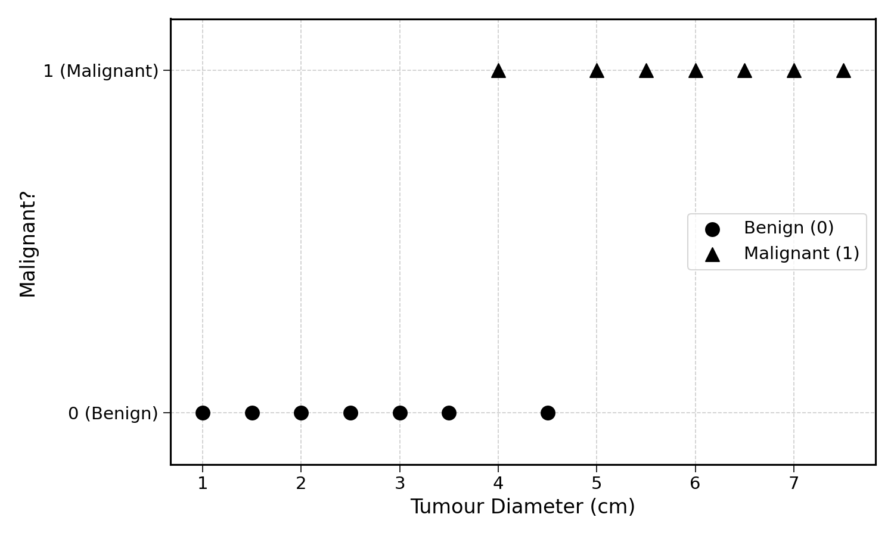
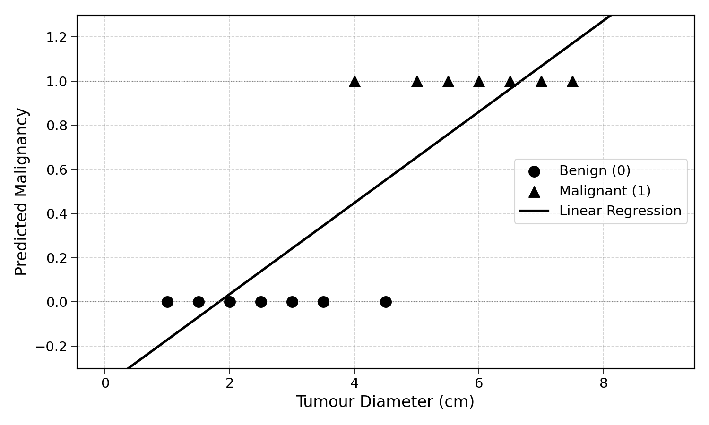
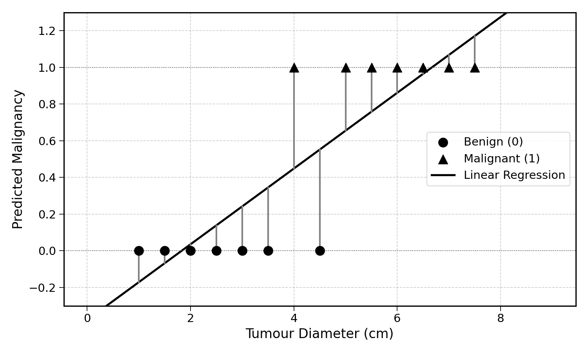
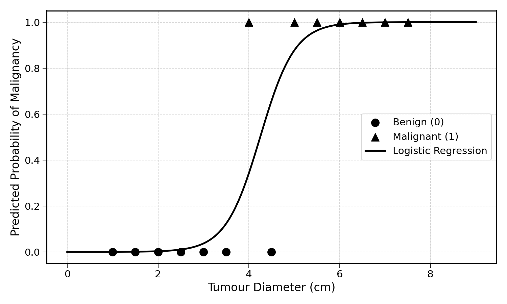
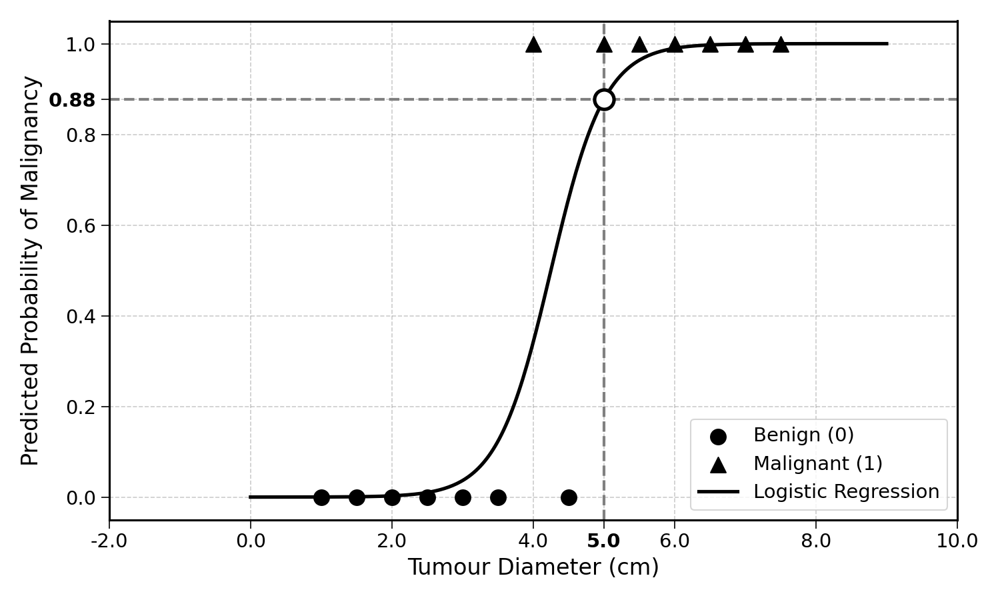

23 The Classification Problem
So far, we have only predicted continuous quantities like ice cream sales or electricity production. This prediction task is called regression. This can be a confusing name, as it does not have much to do with linear regression.
A regression problem is the prediction of a continuous quantity like ice cream sales or electricity production. This problem can be addressed with a linear regression as a model. Here, regression is the problem type and linear regression is the model. The model is the tool used to solve the problem.
Regression is not the only prediction task. Instead of predicting continuous quantities, we could also predict discrete labels like:
- Medical diagnosis: malignant or benign
- Email filtering: spam or not spam
Can you think of other classification problems?
Solving classification problems enables us to solve tough human problems. For instance:
- Based on the diameter of a tumour, can we predict its diagnosis? What is its probability of being malignant?
- When a new email enters your inbox, is it spam? Or is it a legitimate email?
Based on the answer to these questions, we can take action in the real world.
23.1 Binary Classification
These two examples are binary classification tasks. The model’s task is to distinguish between two different labels like “spam” or “non-spam”. One of these two labels is attributed the number 1, and the other 0.
Which of the two classes is 1 and which is 0 though? Generally, the 1 class is the class the model is trying to detect, such as whether an email is “spam” or a tumour is “malignant”.
If you have already had any medical test done, you may remember that a negative test result is generally good news, as it indicates the absence of the disease tested for. The terms “positive” (\(1\)) and “negative” (\(0\)) are used interchangeably with the class labels.
Exercise 23.1 If you are building an algorithm to detect banking fraud, which binary classification labels would you use? And which one would be the \(1\) label?
Classification problems can also involve more than two classes. For instance, you can predict whether a picture shows a dog, a cat, or an elephant (i.e., classifying pictures). Another interesting classification problem is the prediction of my next ___. There is a finite number of words in our vocabulary, let’s say 50,000. The task is to predict which of these comes next, based on the preceding words and context. This is how Large Language Models work; just a big classification problem.
23.2 Classification Output
The output of a binary classification model is a probability of belonging to the \(1\) class. For instance, if the prediction for a given tumour is \(0.8\), it means that the predicted probability of malignancy is \(0.8\). The predicted probability of being benign is \(1 - 0.8 = 0.2\).
A probability is a number between 0 and 1 that indicates the degree of belief in an event happening. An impossible event has a probability of 0, and an event that happens every time has a probability of 1.
23.3 Tumour Classification
Let’s look at the following dataset showing tumour diameter and malignancy:

We can see a pattern: smaller tumours tend to be benign (\(0\)) and larger tumours tend to be malignant (\(1\)). There is some overlap in the middle, a tumour of 4 cm is malignant while one of 4.5 cm is benign. This kind of noise is common in real-world data.
23.4 Can We Use Linear Regression?
Using the data above, we could try fitting a linear regression, using gradient descent. We would get the following:

There are several issues with this approach:
- We need the prediction to be a number between 0 and 1, but the linear regression predictions go beyond these bounds
- The general prediction error remains high

Would there be a better way? Another leading question, yes. Somehow, we would need to change the shape of the linear regression, so that it is not a straight line. This may be a problem though, as the word “linear” is in the name…
23.5 Enter logistic regression
This is where logistic regression comes in. Before going into any description, this is what a logistic regression would look like on the same data:

It is already a much better fit. The prediction error of this curve is much lower. At any point on the x-axis, or diameter of the tumour, there is an associated probability prediction between 0 and 1.

For a tumour with a diameter of 5 cm, the logistic regression predicts a probability of malignancy of approximately \(0.82\). This is far more sensible than any prediction a straight line could provide.
But how do we get such a shape? How do we train this model? How do we evaluate it?
These are exactly the questions that this section will answer. By the end, you will be able to predict discrete labels from any dataset using logistic regression. If this sounds interesting, let’s go.
23.6 Final Thoughts
Classification involves predicting discrete labels (like “spam” or “benign”) rather than continuous quantities. Binary classification assigns a probability between 0 and 1 to an observation belonging to the positive class.
We have seen that linear regression is a poor fit for binary classification; its predictions can exceed the \([0, 1]\) range and the straight line does not match the data well. Logistic regression solves this by transforming the line into an S-shaped curve that naturally stays between 0 and 1.
The next chapter will walk through the logistic regression formula step by step, starting with the key ingredient that makes the S-shape possible: the exponential function.
23.7 Solutions
Solution 23.1. Exercise 23.1
The two labels would be “fraudulent” and “non-fraudulent” (or equivalently, “legitimate”).
The \(1\) label would be “fraudulent”, as this is the event the model is trying to detect. A prediction of \(0.95\) for a given transaction would mean a 95% predicted probability of the transaction being fraudulent.